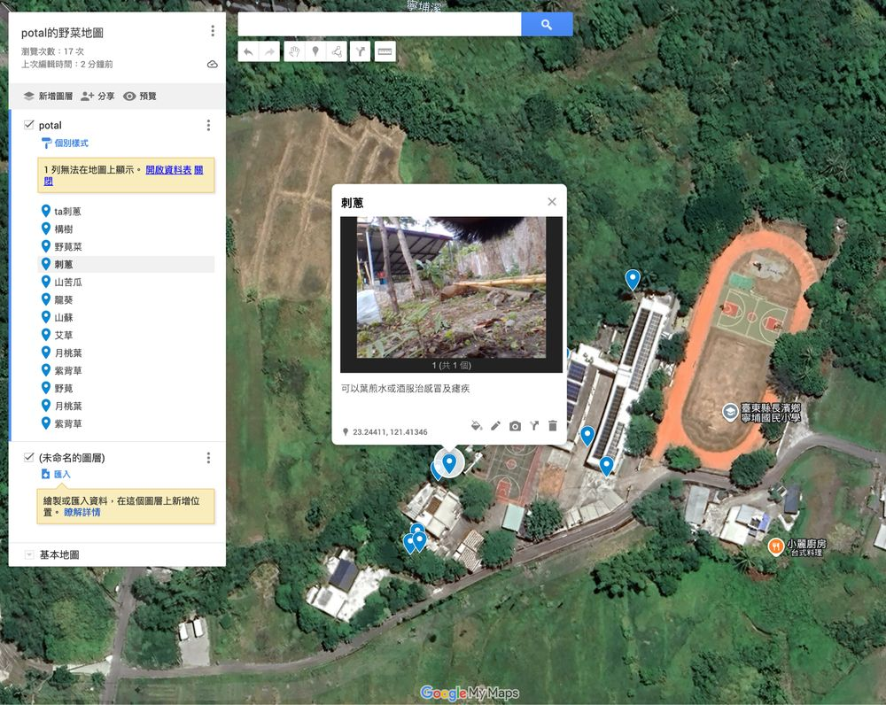
校園野菜地圖
Google 我的地圖：每種野菜一個圖層，地標寫阿美語和中文，附照片與辨識特徵。
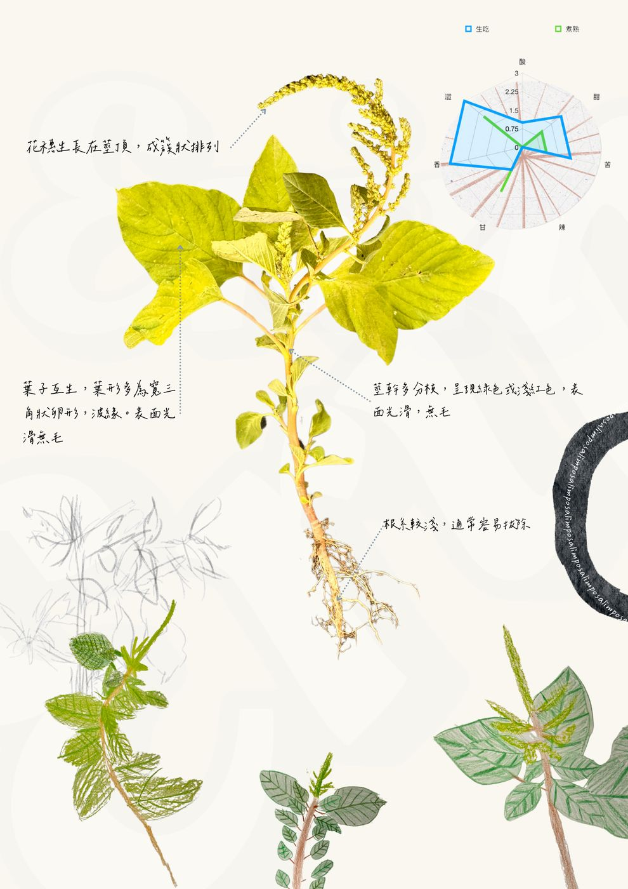
餐桌上的永續智慧
賴奕芸 Salimpo 阿美山海文化實驗小學（寧埔國小）
課程共同設計 Ciping 吳慧麗老師
公開版：不含可辨識學生臉孔的照片與影片
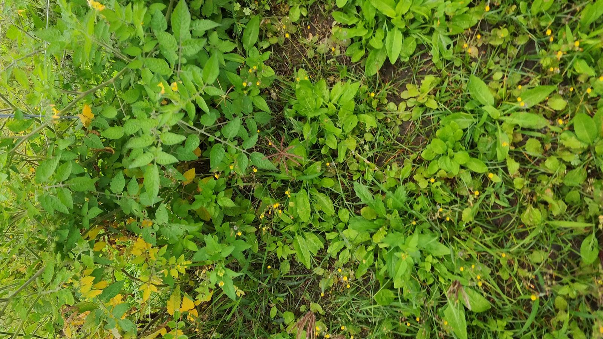
路邊有一株不認識的草。
什麼時候採、採哪個部位、怎麼煮、有什麼禁忌，這些知識在部落的人身上：
也在他們走過的田埂、路邊和海岸。
10:45 第二場吳雪月老師〈大地的超商〉
這一場孩子怎麼學會看、問、記、說
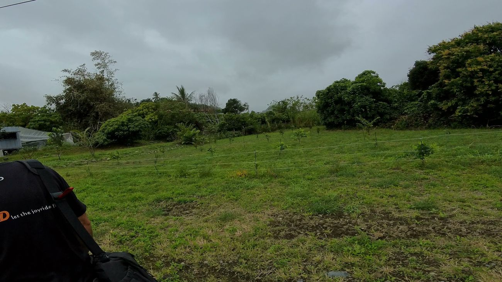
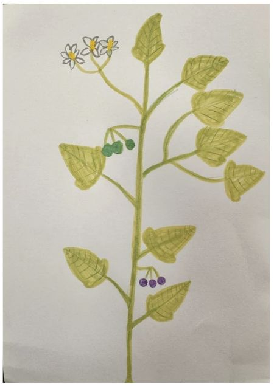
照片、田野筆記、繪圖
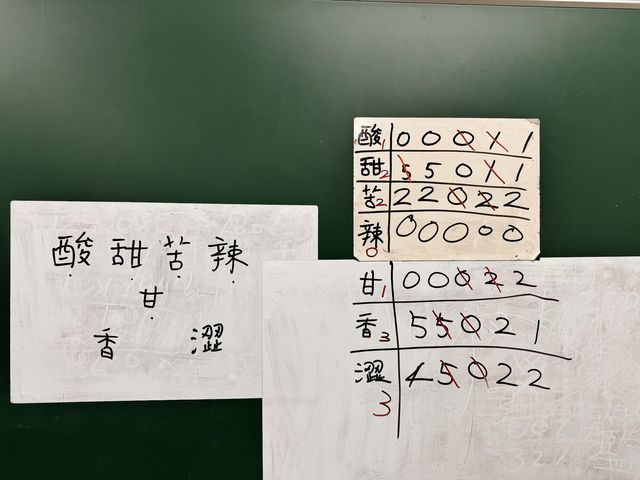
風味紀錄、AI 測試
地圖、精靈、繪本
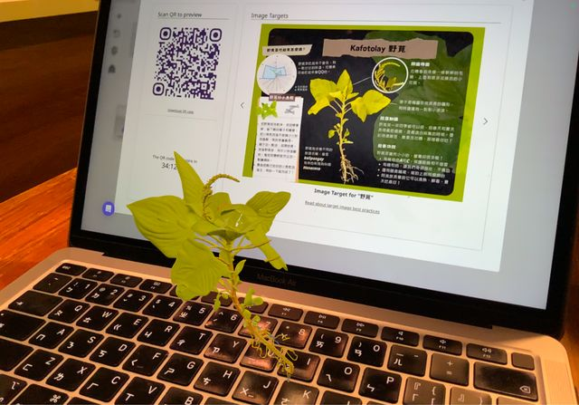
發表、訪談、走讀
前一段留下的照片和筆記，就是下一段的材料。
採多少，用多少。
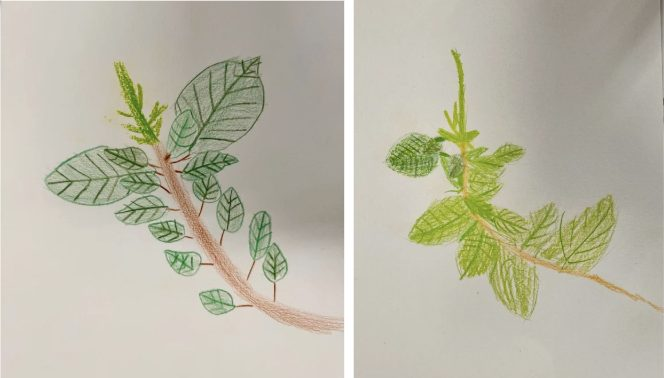
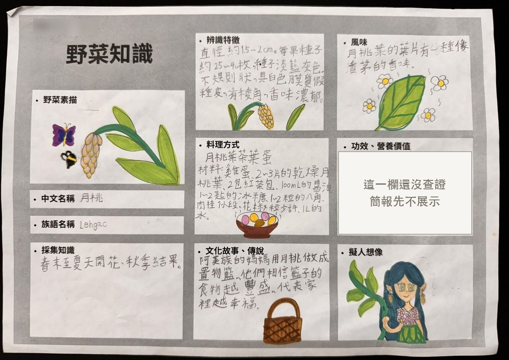
老師最常問
「你是從哪個部位看出來的？」
「這個用途，是誰告訴你的？」
課堂上冒出的問題
野菜苦苦的，為什麼煮成湯卻很好喝？
「你說的苦，跟同學說的苦一樣嗎？」
一起記下部位｜生的還是煮過的｜誰嚐的
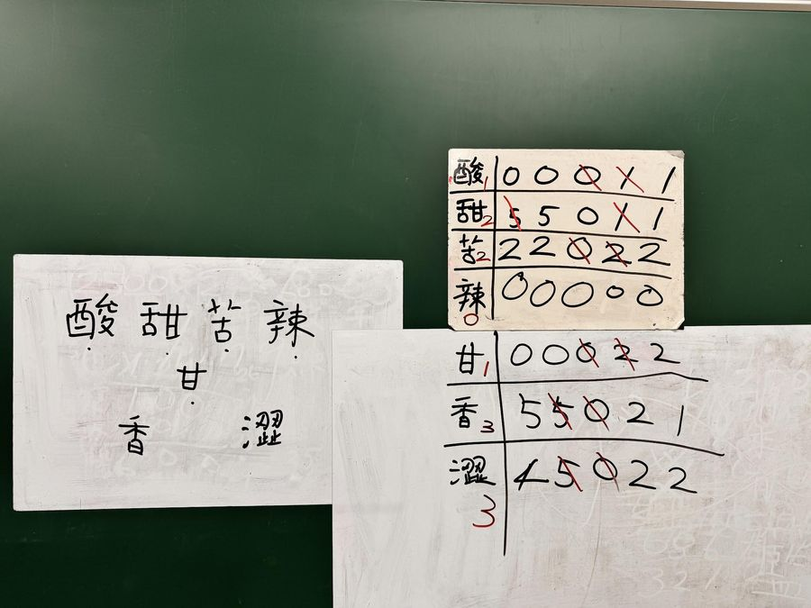
從市場到餐桌
向攤販請教怎麼挑、怎麼煮 → 分工做刺蔥炒蛋 → 自己發想過貓春捲
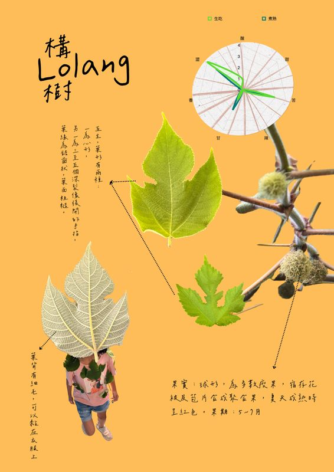
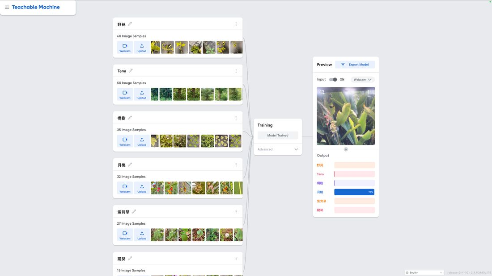
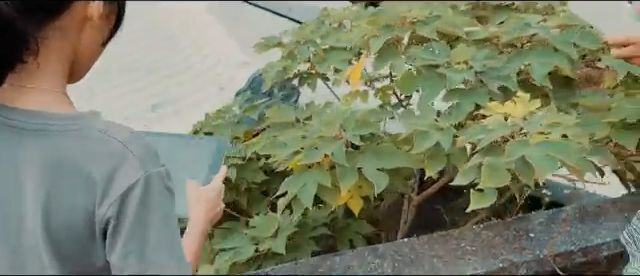
「它認的是背景，還是葉子？」
AI 說可以吃，不算數。
AI 不取代耆老，只幫耆老的知識被更多人看見。

Google 我的地圖：每種野菜一個圖層，地標寫阿美語和中文，附照片與辨識特徵。
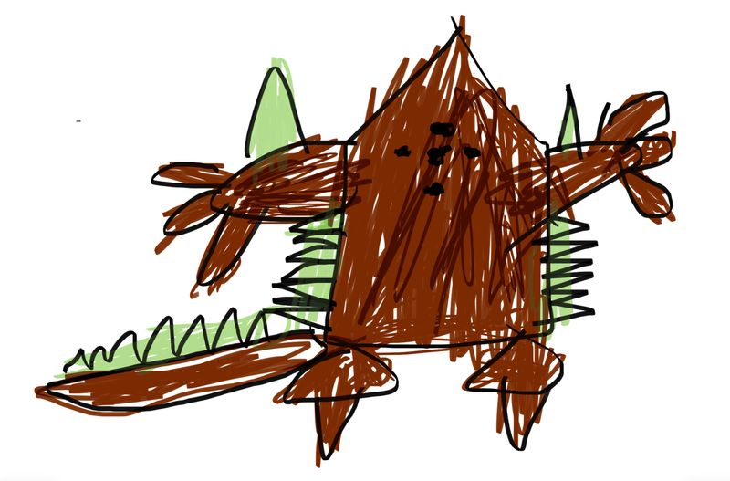
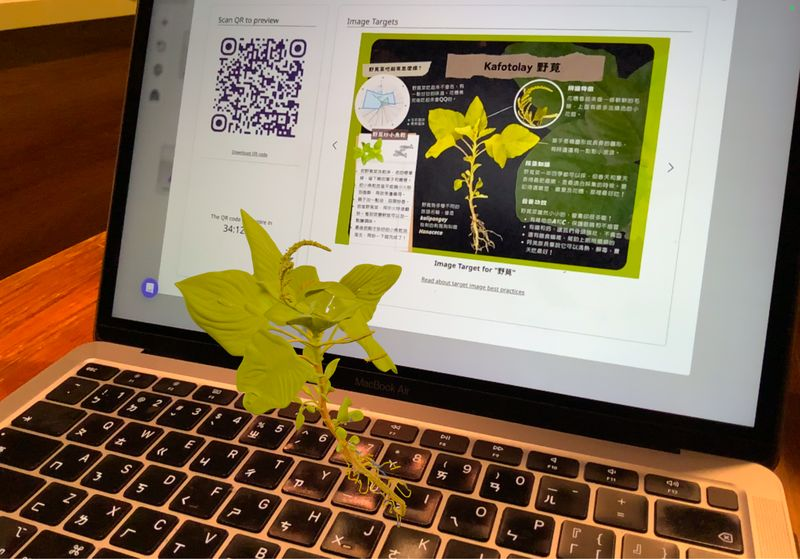
| tana' 刺蔥 | 全身帶刺 | 勇敢的冒險家 |
| tatokem 龍葵 | 需小心處理 | 溫柔的守界者 |
第一人稱自傳・錄下自己的聲音・手繪轉成 AR
把野菜知識編成繪本《Misolap ci Awos to dateng》。
精靈的個性是孩子的創作；植物的特徵和用途要有來源。作品上分開標示。
孩子分析在地性・文化性・故事性 → 提出包裝建議
「傳承老人的野菜精神」— 老闆說開店的理由
老闆擔心野菜種類變少｜傳承找不到人接
留給孩子的問題哪些野菜越來越難找？可以怎麼一直記錄下去？
一株植物，
連著族語、生態、歷史、料理，
也連著教我們的人。
最後一頁的 QR code 可以看簡報和網站
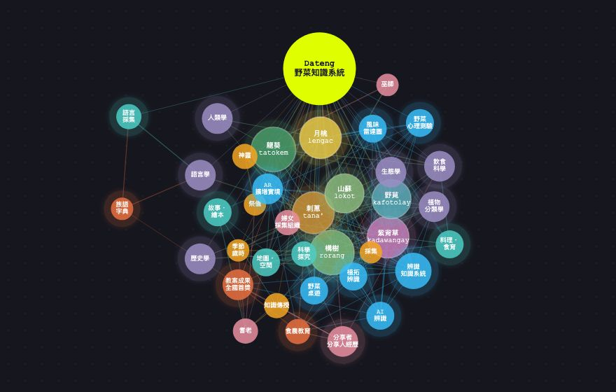
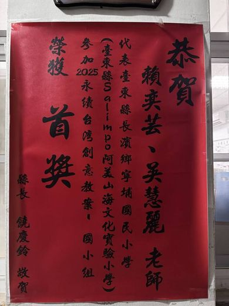
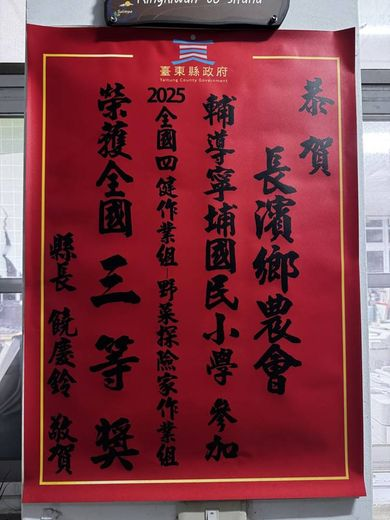
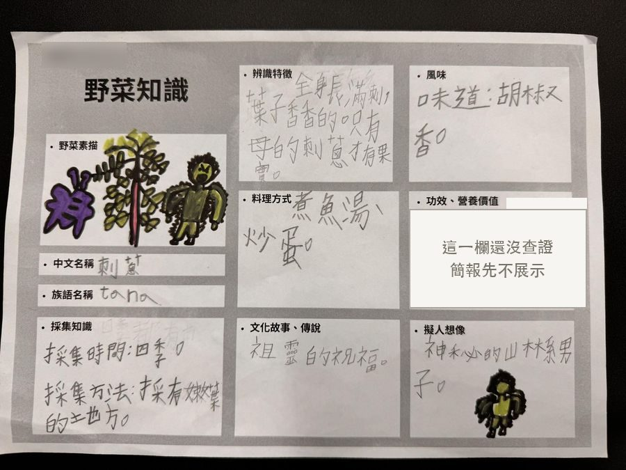
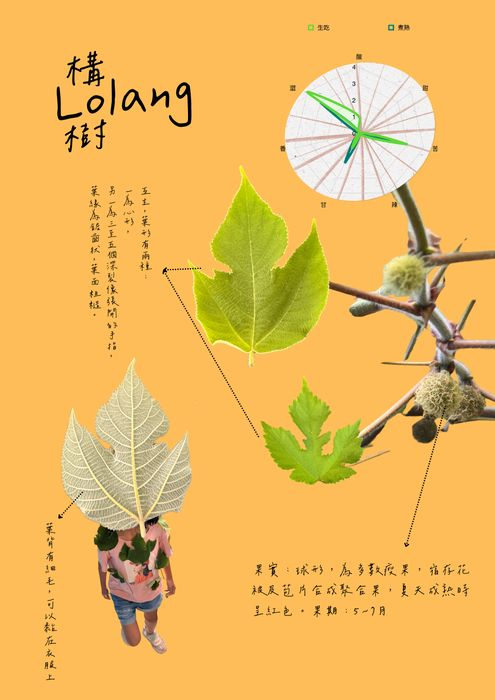
看學習，就看孩子能不能指出線索、說明紀錄、交代來源。
2026 臺東縣四健作業組競賽 幼初級組冠軍・全國賽佳作
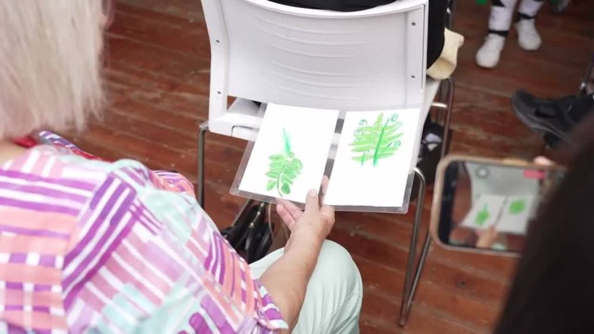
「拿麥克風會緊張，可是講自己真的做過的事，就比較講得出來。」— 孩子的記錄簿
這株野番茄有抗病、耐旱的「超能力」
還沒有植物學鑑定
不宣稱它抗病或耐旱
糖減半，大約可以放半年
保存期限沒有檢驗依據
沒有驗證，就不寫保存期限
請長輩帶孩子認一株校園植物，
拍照、記下特徵
畫成知識卡，寫上是誰教的
練習一分鐘導覽，說給學弟妹聽
低年級 用畫的、用說的高年級 再加上訪綱、來源比對
不知道，就說不知道。
餐桌上的永續智慧，不是把野菜保存起來，而是讓這些關係，在孩子的日常裡繼續長下去。
Aray，謝謝大家。
賴奕芸｜Salimpo 阿美山海文化實驗小學（寧埔國小）
laierin615.github.io/
laierindateng/forum
合計 86 節，是原始教案的規劃節數；各校可以依條件選用其中幾項。
| 向度 | 我開始做到 | 我做到了 | 我能分享與改進 |
|---|---|---|---|
| Head 問清楚 | 說出 2 種野菜的名字 | 用特徵辨識，並解釋 AI 為何誤認 | 說明辨識的限制 |
| Hands 做出來 | 跟著摘菜、洗菜 | 安全料理或完成地圖圖層 | 教同伴並修正 |
| Heart 尊重 | 知道先請教再採集 | 引述耆老與店家的話並標示來源 | 把成果帶回部落分享 |
| Health 安全 | 洗手、不亂吃 | 安全使用刀具與爐火 | 向他人說明安全理由 |
| 族語與文化 | 念出 Dateng 等詞彙 | 地標寫阿美語與中文 | 向長者請教並回饋 |
依學校族語詞庫核對；不同部落的說法可以並列，不硬統一。